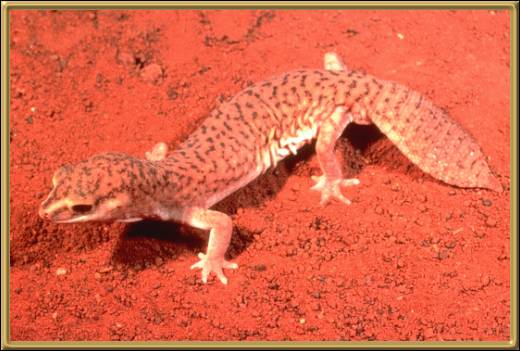

These Geckos use their tails to plug the burrows that they live in. Apparently regenerated tails are thicker than their original tails, and so are even more efficient at plugging their burrows.
Photographer: Unknown